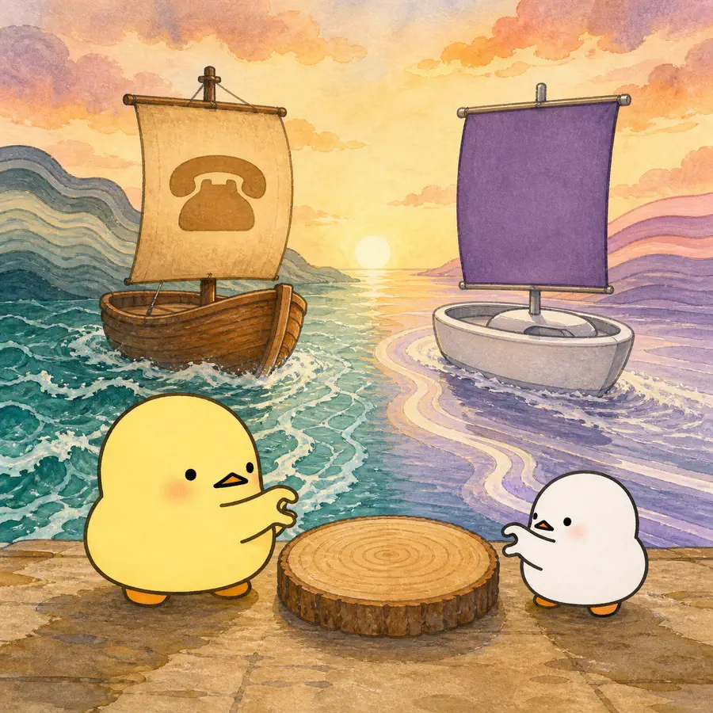
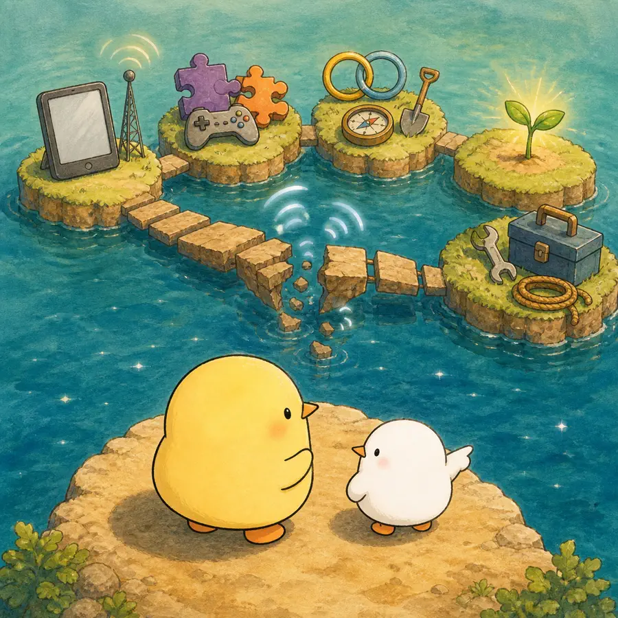
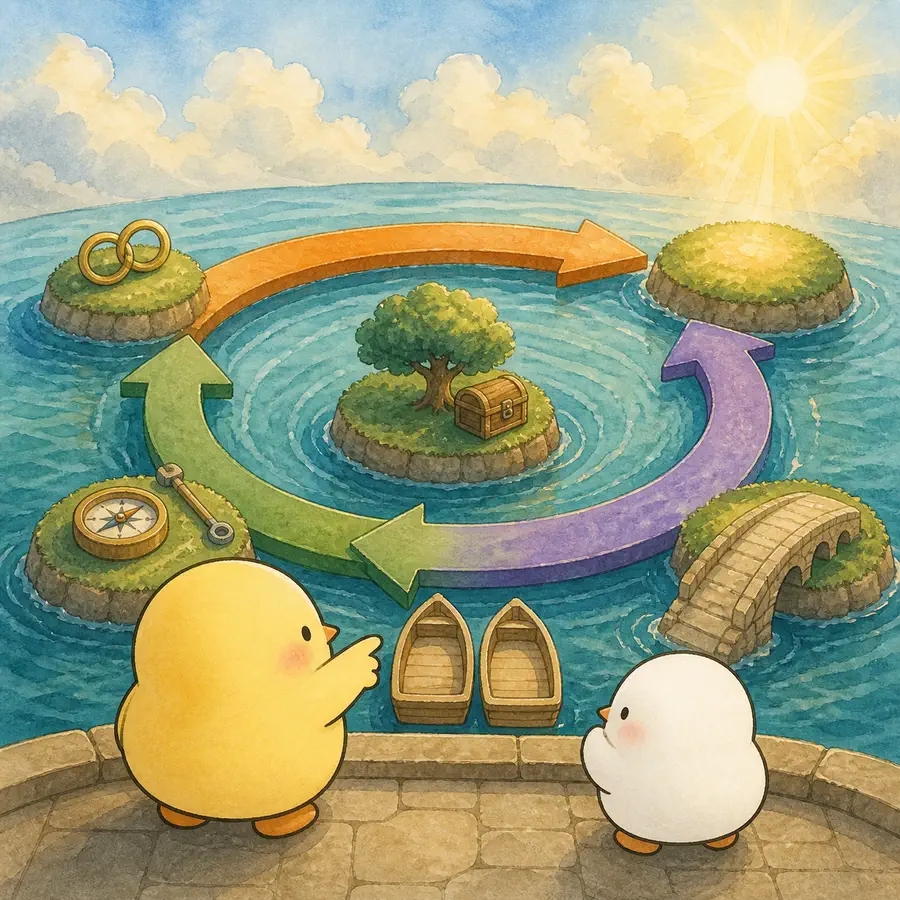

ILLUSTRATED OVERVIEW
기술은 노년의 삶을 저절로 더 좋게 만들까?
기술 격차는 기기 보유 하나로 끝나지 않습니다. 생애의 기술 경험부터 실제 이용과 지원, 조건부 혜택까지 여러 환승 단계를 따라갑니다.
옆으로 넘겨 4컷 보기
-

현재의 연령차에는 노화뿐 아니라 서로 다른 역사적 기술 노출을 겪은 코호트 차이가 섞인다.
-

디지털 불평등은 접근, 숙련, 이용 방식, 혜택, 지속 사용의 연쇄다.
-

ICT와 안녕의 관련성은 이용 목적과 메커니즘에 따라 다르며 선택효과가 남는다.
-
스마트홈과 원격돌봄의 가능성은 인프라·비용·지원·보안·유지관리 조건에 달려 있다.